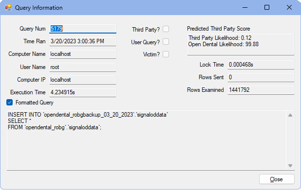

Slow Query Log
See Database Management Systems.
The slow query log tool is used to read the slow query log when troubleshooting slowness in Open Dental.
In the Open Dental application folder, double-click theSlowQueryLogTool folder, SlowQueryLogTool.exe.

If the SlowQueryLogTool folder isn't present, run the Setup.exe on the computer to insert it.
The slow query log tool is used by Open Dental support when Troubleshooting Slowness issues. Users should contact Open Dental support to determine if the log is needed for their office.
Slow Query Log Tool
Use the Slow Query Log Tool to review data from the slow query log. The log must be first be created. See below for details.
Log Info and Filters:
- File Path: Enter the location of the slow query log.
- Log Info: The beginning and end date of the log information.
- Filter Date and Time: Filter the results of the log by date and office hours.
- Filter Queries: Filter specific queries by execution time or rows examined.
- MySQL Version: The MySQL version used by the database.
Grids:
- Queries: Lists individual queries.
- Query Groups: Groups similar queries.
Summary:
- Grade: An evaluation of how bad the slow query log is. It is based off the average of small to medium sized offices. If the grade is A or B, the slowness is not likely due to the Open Dental database. If the grade is C or lower, the slowness may be a cause of the Open Dental database.
- Test 1: Rows Examined: This looks at the number of queries that have a low number in the Rows Examined field. This test fails when the percent of queries with Rows Examined less than 5000 rows is over 20 percent.
- Test 2: Non-Open Dental Queries: This tool detects queries that are not from Open Dental by checking if the queries match the patterns we use when writing queries. If this percentage is high or if the worse queries are third-party, temporarily disable the third-party service to see if slowness improves. This test fails if more than 15% of queries are from a third-party.
- Test 3: Victim Queries: A query is marked as a victim query when it examines less than 100 rows and takes more than 3 seconds and there is another query that examines over 100,000 rows and takes more than 5 seconds and finishes within 10 seconds after the victim query finished. If a query is a victim query, look for queries around that time to see the root cause of the slowness. This test fails if there are any victim queries.
- Test 4: User Queries: Queries from the User Query window in Open Dental are sometimes the cause of slowness. A query is counted as a user query if it contains an "@" character or it contains the text "Modified By". This test fails if more than 5% of queries are user queries.
Query Information
Double-click a query from the Queries grid to view details.
Details in this window are informational only.
- Third Party?: When checked, the query was part of a third-party program.
- User Query?: When checked, the query was run from Open Dental (e.g., Query Favorites).
- Victim?: When checked, the query was the result of the previous query having problems (e.g., taking too long).
Create the Slow Query Log
To utilize the tool, first enable to Slow Query Log to gather data.
- Open the my.ini file.
- In the my.ini file, [mysqld] section, add the following 2 lines:
slow_query_log=1
long_query_time=2
- Save and close the my.ini file.
- Restart the MySQL service.
- The file is created in the mysql/data folder (named servername-slow.log).
- Continue using Open Dental as normal. The log tracks queries run during this usage time.
- When enough data is collected, move the file to the mysql/backups folder. If a backups folder does not already exist, create one.
- Enter the path of the mysql/backups folder to the File Path field (see above).
- Use the Slow Query Log Tool to examine the log for a recurring pattern of slow queries.
When the slow query log is no longer needed:
- In the my.ini file, remove the two lines added above.
- Restart the MySQL service.